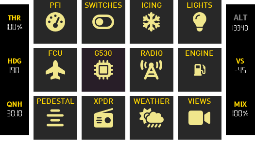
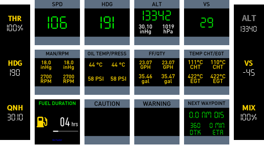
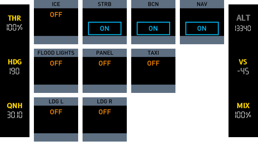
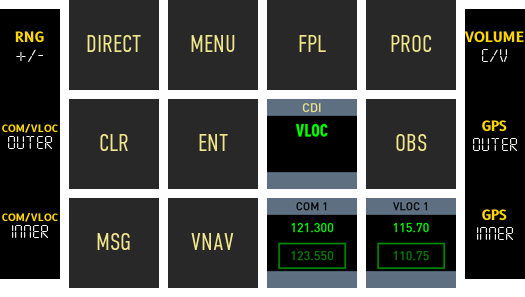
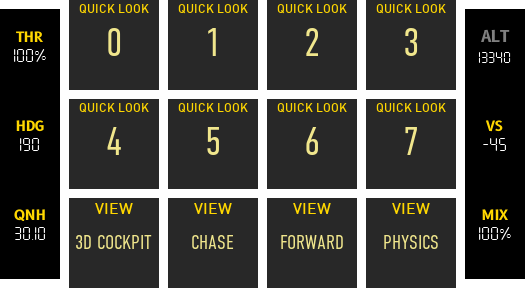

Beechcraft Baron 58¶

This configuration supports various cockpit functions for the Beechcraft Baron 58.
Primary Instruments (1) Engine Instrumentations (2) Avionics Panel (3) Instrument Sub Panel (4) Throttle Quadrant / Center Console (5) Autopilot (6)
- Primary Instruments
- Airspeed Indicator
- Altimeter
- Vacuum Gauge
- Variometer
- Engine Instrumentations
- Manifold Pressure
- Propeller RPM
- Fuel Flow
- Engine Temperature
- Oil Temperature and Pressure
- Avionics Panel
- Transponder
- COMM 1 and COMM 2 Radios
- NAV 1 and NAV 2 Radios
- GNS 530
- ADF Frequency Selection Panel
- Instrument Sub Panel
- Master Electrical Switches
- Avionics Master Power and Prop Sync
- Pitot Heat Switches
- Icing Switches
- Fuel Boost Pump Switches
- Lights Panel
- Landing Gear Lever
- Parking Brake
- Fuel Gauges
- Throttle Quadrant / Center Console
- Throttle Levers
- Prop Levers
- Mixture Levers
- Autopilot
- AP
- HDG
- FD
- ALT
- NAV
- BC
- APPR
- DN / UP Rocker Switch
Deck Functions¶
This cockpit deck consists of 13 pages and 4 unique encoder configurations.
The pages can be accessed via the hardware buttons 1 through to 7 or buy navigating to the home page via the 0 button.
mindmap
Loupedeck Live
Button 0
Home
G530
WEATHER
VIEWS
Button 1
PFI
Button 2
SWITCHES
ICING
LIGHTS
G530
Button 3
AUTOPILOT
G530
Button 4
RADIO
Button 5
ENGINE
Button 6
PEDESTAL
Button 7
XPDRPages¶
Home¶

The home page provides an index to all the various pages available (up to a total of 12).
The bottom buttons can provide quick access to up to 7 different pages.
Note
Various pages are still work in progress (e.g. Pedestal, Views)
PFI¶

Central to this page is data you would consider primary flight instruments. The speed, bearing, altitude and vertical speed fill the first row.
The second row consists of engine data in a more compact form than that found in the engine page.
The third row consists of:
- Fuel duration (a calculation of time remaining based on fuel flow and fuel quantity).
- Caution annunciators.
- Warning annunciators.
- Information on the next waypoint in flight plan.
Switches¶

This page provides buttons for battery, alternators, avionics, prop sync and fuel pumps.
There are also two ignition buttons IGN 1 and IGN 2 which are longpress buttons to start engines.
Icing and lights have had to be placed in separate pages as it was impossible to fit them here.
Icing¶

There are buttons to cover icing functions for left and right pitot (PITOT L and PITOT R), stall warn, prop and windshield.
For boots functions there is a BOOTS AUTO which can set the boots to inflate automatically at intervals, a button to switch boots off (BOOTS OFF) and a longpress button (BOOTS) that can be used to manually inflate boots.
Lights¶

Most of these are self explanatory. One possible improvement will be to add encoders for the panel lights.
FCU¶

G530¶

Radio¶

Engine¶

Pedestal¶

Transponder¶

Weather¶

This page provides comprehensive weather data including coverage for different cloud layers and tropo data.
Views¶

Provides quick look functions (long press to memorise views). Also provides standard views (3D Cockpit, Chase, Forward, Physics)
Encoders¶
FCU¶
Provides barometer setting (QNH), throttle/mix (THR/MIX) controls and autopilot controls such as HDG and VS. Throttle and Mixture can be set to 100% by pressing the encoder.
-
Left
- THR Throttle control (both engines).
- HDG Heading/bearing for autopilot.
- QNH Altimeter barometer setting.
-
Right
- ALT Not used.
- VS Vertical speed.
- MIX Fuel mixture (both engines).
Radio¶
Provides controls for XPDR, Transponder mode, ADF frequency, COM and VLOC. XPDR, ADF, COM and VLOC encoders have a coarse/fine toggle; pressing the encoder will toggle between coarse/fine adjustment.
-
Left
- XPDR Transponder identifier.
- Mode Transponder STBY/ON/ALT/TEST.
- ADF ADF frequency.
-
Right
- Not used.
- COM COM1 frequency.
- VLOC VLOC frequency.
Pedestal¶
Provides individual throttle, prop and mixture engine controls.
-
Left
- THROT Throttle for left engine.
- PROP Propeller speed for left engine.
- MIX Fuel mixture control for left engine.
-
Right
- THROT Throttle for right engine.
- PROP Propeller speed for right engine.
- MIX Fuel mixture control for right engine.
G530¶
These encoders provide control of G530 elements.
-
Left
- RNG Zoom in and out of map.
- COM/VLOC OUTER Coarse control for COM or VLOC frequency.
- COM/VLOC INNER Fine control for COM or VLOC frequency.
-
Right
- VOLUME Controls COM1 or VLOC volume (push button to toggle between).
- GPS OUTER Coarse control for GPS knob.
- GPS INNER Fine control for GPS knob.
Procedures¶
Procedures in relation to Loupedeck functions.
Before Starting Engines¶
- Exterior Inspection COMPLETED
- Parking Brake ON
- Power Levers SLIGHTLY FORWARD
- Propeller Levers FULL FORWARD
- Mixture Levers FULL FORWARD
- All switches OFF
- Battery Switch ON
- Fuel Quantity CHECK
- Check Annunciator Panel Warning Lights.
Engine Start¶
- Master Battery Switch CHECK ON
- Avionics Master Switch OFF
- Left Alternator Switch ON
- Left Magneto Switch START (hold until engine running)
When Left Engine Running¶
- Left Power Lever IDLE (FULL BACK)
- Left Magneto Switch CHECK BOTH
- Right Alternator Switch ON
- Right Magneto Switch START (hold until engine running)
When Right Engine Running¶
- Right Power Lever IDLE (FULL BACK)
- Right Magneto Switch CHECK BOTH